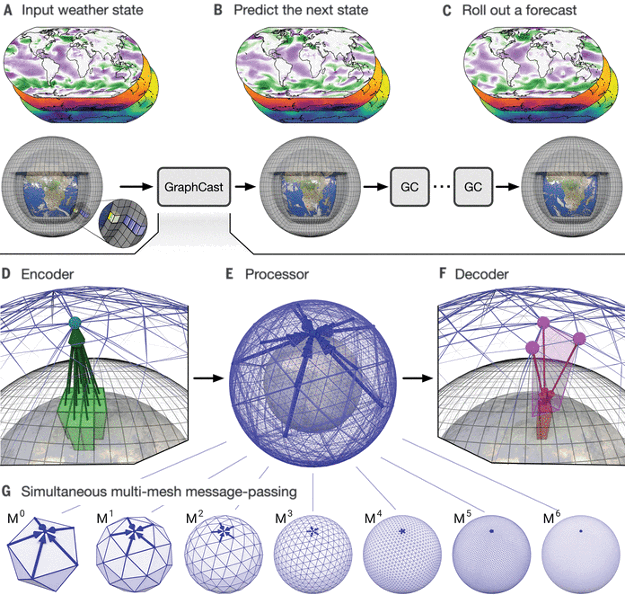
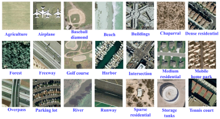
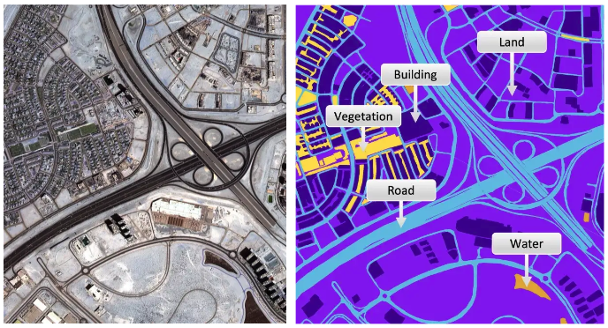
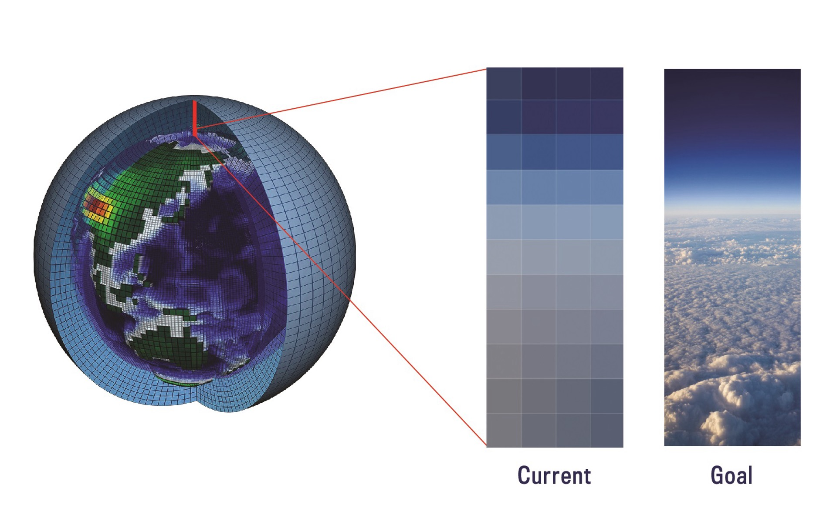

Machine Learning for Climate and Environmental Sustainability#
In the last decade, machine learning has become an invaluable tool in accelerating scientific discovery. This is because machine learning algorithms can help with several aspects of the scientific discovery process. In particular, ML can:
Increase efficiency: Machine learning can automate the analysis of large and complex data sets, allowing for faster processing and integration of new observations
New insights and discoveries: Machine learning can identify patterns and relationships in complex data sets, leading to new insights
Improved predictive modeling: Machine learning can be used to build accurate predictive models that can help scientists better understand complex environmental systems. These models can be both faster and more accurate than traditional physics-based models.
Pros and cons of machine learning in the environmental sciences#
Problems in the environmental sciences are typically complex, meaning that we have many different variables that can play a role.
We often do not have a full mathematical model that can describe every aspect of the systems that we are interested in. This makes
environmental problems good candidates for the use of data-driven methods, but there are many problems where machine learning is not
necessarily the best choice. It’s a good rule of thumb to start with simpler models first, and then try out more complex, less interpretable data-driven models.
In general, it’s good to keep in mind the strengths and weaknesses of machine learning methods.
Machine learning is good at:
Non-linear prediction tasks
Pattern recognition
Processing through large amounts of data
Fast prediction (compared to traditional physics-based models)
However, machine learning can come with trade-offs that should be considered:
We typically need very large data sets to train machine learning models
Machine learning models will learn the biases of the data sets they are trained on. Compared to physics-based models, they also typically do a poor job of extrapolating to unseen data regimes (that is, they do not perform well when given data that is in a different regime than the data they were trained on)
Machine learning models are less interpretable than physics-based models
It can also be challenging to integrate machine learning models with existing physics-based models that have been developed by the scientific community over many years
Energy costs associated with training large models is increasingly becoming a significant concern
Examples of recent successes of ML applied to climate and environmental applications#
Despite both the pros and cons of using machine learning methods, there has been a huge amount of progress in the application of these methods across weather, climate, and environmental applications in recent years. In this class, we will explore some of these applications.
Here, we highlight a few use-cases where machine learning is currently leading to major advances:
AI Numerical Weather Prediction (NWP)#
AI models are rapidly become as or more skillful than traditional physics-based numerical weather prediction models. Machine learning based forecasting models have recently demonstrated skill on par with state of the art weather forecasting models. 
Image source: Lam et al., Learning skillful medium-range global weather forecasting, Science 382, 6677. 1416-1421 (2023)
Remote sensing#
One major use case where deep learning has demonstrated increasing skill and progress in recent years is in the realm of computer vision– using machines to understand and identify objects in images of videos. Pattern recognition lends itself to a number of different use cases (feature detection, processing very large image data sets, and anomaly detection). Pattern recognition in the geosciences can also extend to the analysis of time series, spatio-temporal patterns, or observational data sets from specialized instrumentation.
A very important example is the application of these methods to satellite remote sensing. Satellites provide images of the Earth at high temporal and spatial frequencies, and the application of computer vision methods to these data sets has led to improved understanding of atmospheric and oceanic processes and faster and more accurate response to natural disasters.
Some example use cases are fire detection, wildfire burnt area mapping, coastline and flood mapping, forest canopy height prediction, monitoring of glaciers and sea ice extent, and classifying clouds.

Image source:

Image source:
Climate model parameterization development, tuning, and evaluation#

Traditional climate models require the development of models, or parameterizations, of many different atmospheric, oceanic, and land processes. These parameterizations often require trade-offs in terms of the speed and accuracy with which we can represent the underlying processes, in order to have climate models that computationally efficient enough to run projections over 100’s or 1000’s of years. Machine learning methods have enabled us to improve the accuracy and speed with which we can model specific climate processes.
In addition, climate models have a number of free parameters that are tuned in order to best match existing climate observations. Machine learning can help to improve this climate model tuning process, by allowing us to emulate climate models in a very fast way using machine learning models.
Finally, machine learning methods allow us post-process the huge amount of data that is output from climate models, enabling more rapid evaluation and improved understanding.